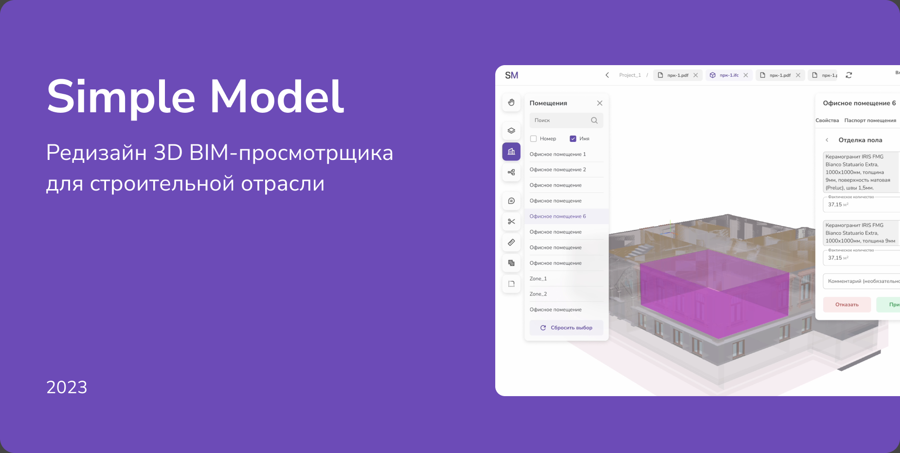
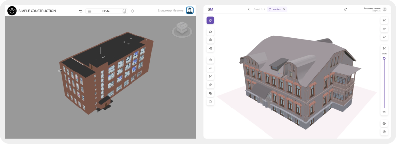
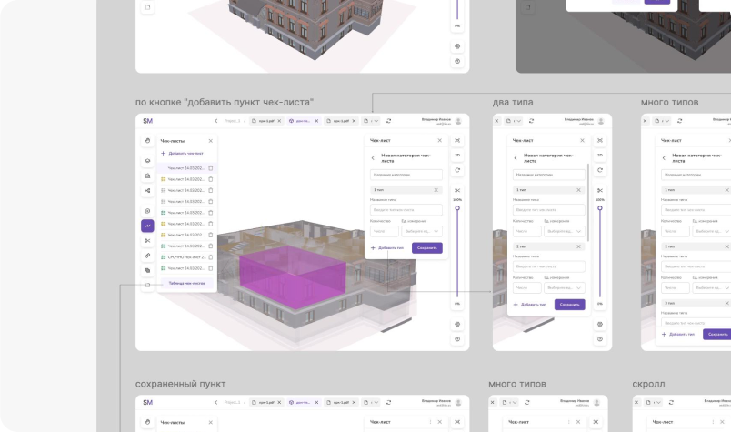

Simple Model
Редизайн 3D BIM-просмотрщика для строительной отрасли
Продукт
B2B-инструмент просмотра BIM-моделей, создававшийся как альтернатива ушедшему отраслевому решению.
Предполагался для использования инженерами и демонстраций заказчикам.
Проблема
MVP был функционально рабочим, но практически непригодным для реального использования:
- пользователи не понимали, с чего начать
- ключевые действия было трудно найти
- требовалось объяснение от BIM-инженера
- продукт нельзя было показывать заказчикам без сопровождения
- часть сценариев выполнялась вне системы

Продуктовая гипотеза
Основной барьер — доступность для понимания, возможность начать работу.
Гипотеза:
если приблизить логику интерфейса к архитектурным программами, а визуал сделать более чистым, пользователи смогут начать работу без обучения → продукт станет пригоден для самостоятельного использования.
Моё решение
Я переработала структуру интерфейса:
- сгруппировала инструменты по профессиональной логике
- определила ключевые действия в интерфейсе
- второстепенный функционал вынесла в контекстные меню
- добавила контроль состояний и подсказки для редких сценариев
Интерфейс стал ориентирован на начало работы, а не на набор функций.
Проверка
Прототипы проверялись на:
- инженерах, работавших с прошлой версией
- пользователях без опыта работы с продуктом
Критерий — возможность выполнить базовые действия без объяснений.

Результат
После редизайна:
- новые пользователи могли открыть модель и начать работу без сопровождения
- исчезла необходимость объяснять интерфейс перед демонстрациями
- продукт начали использовать вне команды разработки
- продукт снискал коммерческий успех
Влияние на продукт
Инструмент стал пригоден для демонстраций заказчикам и коммерческого использования.
Редизайн фактически перевёл продукт из состояния “технический прототип” в “рабочий инструмент”, который можно внедрять в процессы.